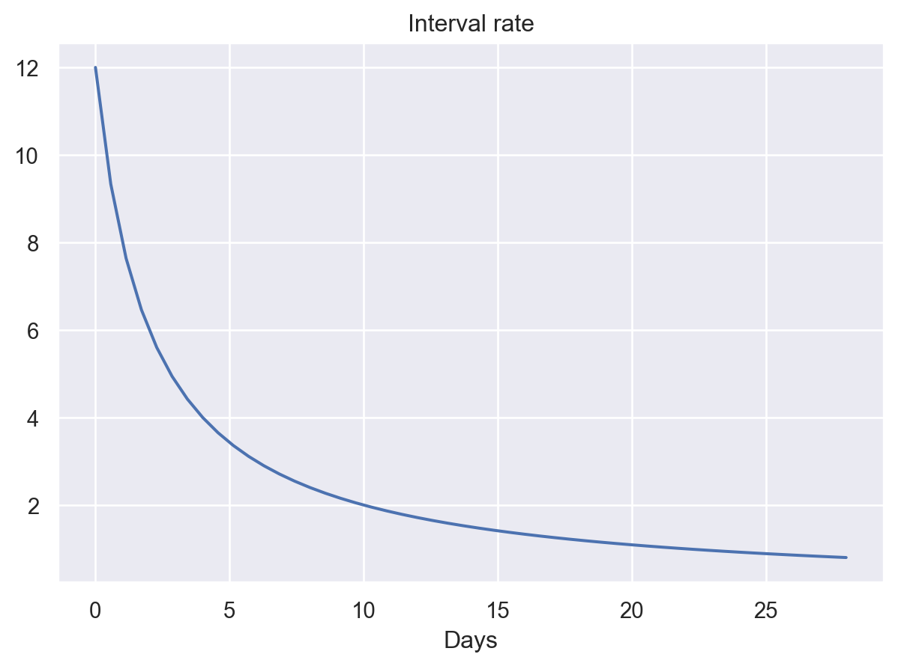
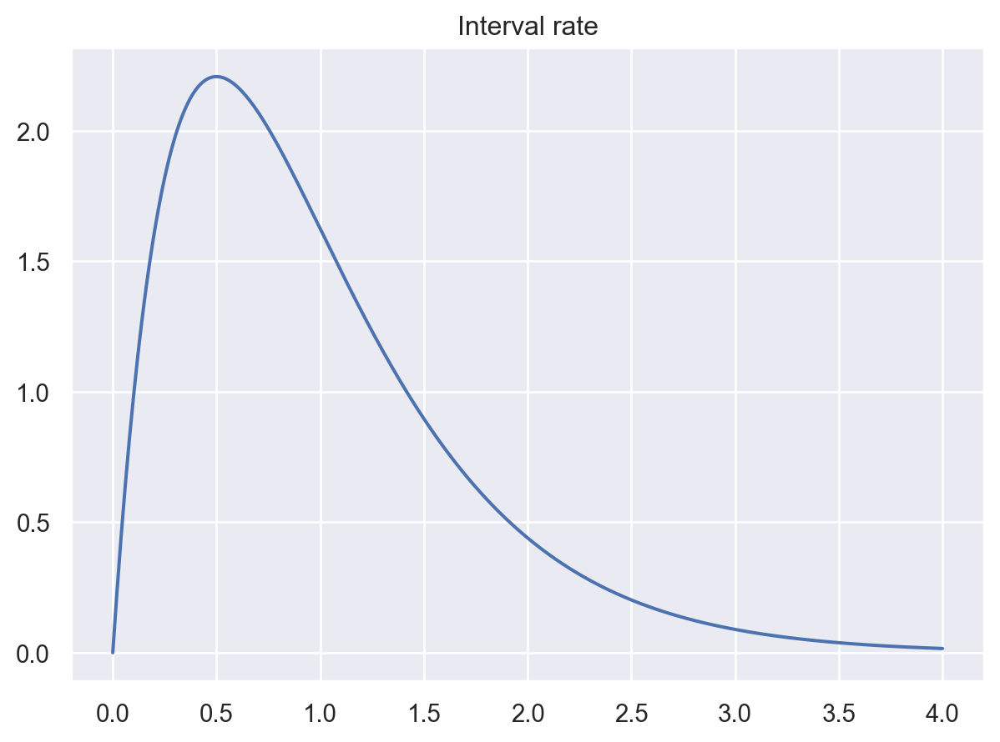

Modelling Events In Time
Summary
This notebook covers part of M343 Book 2, Parts 2, which introduces the Poisson process as a means to model random events that occur in time.
We could not find a Python module that modelled the different type of Poisson processes covered in M343, so we wrote poissonprocesses, a Python module that handles Poisson processes as summarised by M343. A summary of the class that models the particular Poisson process is provided at the beginning of each section.
A few convenience plotting functions are defined at the top of the notebook. These are not novel or interesting, so they are included without explaination.
Dependencies
Functions
Convencience functions for plotting the models.
plot_disc(rv: rv_discrete, step: int = 1) -> so.Plot
Plot and return the probabily mass function of the given discrete rv.
Code
def plot_disc(rv, step=1) -> so.Plot:
"""Plot the approximate probability distribution of X(t),
the number of events in time.
Pass step to reduce the number of x-axis tick labels.
This is useful if the x-axis appears particularly cluttered.
"""
xs = np.arange(rv.ppf(0.005), rv.ppf(0.995)+1, dtype=int)
return (
so.Plot(x=xs, y=rv.pmf(xs))
.add(so.Bar())
.scale(x=so.Continuous().tick(every=step))
.label(x='x', y='p(x)', title='Probability distribution')
)
plot_cts(rv: rv_continuous) -> so.Plot
Plot and return the probabily density function of the given continuous rv.
The Poisson process
A Poisson process is modelled by the Events class.
Major earthquakes
M343 Book 2, Activity 3.2
Let earthquakes, Events, be the Poisson process that models the incidences of major earthquakes worldwide.
Plot the probability distribution for the number of earthquakes expected in 10 years.
(a) Return the probability that there will be at least three major earthquakes in a period of ten years.
(b) Return the probability that the waiting time between successive major earthquakes exceeds two years.
Multivariate Poisson process
A multivariate Poissoon process is modelled by the MultivariateEvents class.
The class implements the __getitem__ method, which allows us to index into an instance of the class to return models for a particular kind (or kinds) of event.
Telephone calls
M343 Book 2, Activity 5.2
Let phone calls, MultivariateEvents, be the multivariate Poisson process that models the arrival rate of the different kinds of phone call a tutor receives over the course of an evening.
(a) Return the probability that between 7pm and 9pm tomorrow evening, the tutor’s telephone will not ring.
Passing : or ... as an index will return the aggregated model of all kinds of events.
(b) Return the probability that the first call after 9pm is from a student.
(c) Return the probability that exactly two of the calls are from members of her family, given that the tutor receives four telephone calls one evening.
(side question) Pot the the distribution of the number of calls expected to be from the tutor’s family, given they received 18 phone calls.
Post office customers
M343 Book 2, Exercise 5.1
Let post office, MultivariateEvents, be the multivariate Poisson process that models the arrival of different kinds of customers at the post office over the course of an hour.
We are given the proportions of each kind of event and the global rate, so we use the from_props class method to initialise the instance of MultivariateEvents.
Output a descriptive table of the multivariate Poisson process.
(a) Return the rate at which customers arrive at the post office to post parcels.
(b) Return the probability that the interval between successive customers arriving to post parcels is greater than an hour.
(c) Return the probability that over a three-hour period, fewer than five customers arrive to post letters.
(d) Return the median waiting time between customers arriving to post something (either a letter or a parcel).
Passing a tuple of labels will aggregate those particular rates and return an instance of Events.
Non-homogeneous Poisson process
A non-homogenous Poisson process is modelled by the NonHomogenousEvents class.
When initialising an instance of NonHomeogeneous, a rate function is expected as an argument.
Learning to ride
M343 Book 2, Activity 6.2
Let bike accidents, NonHomogenousEvents, be the non-homogenous Poisson process that models the occurrence of bike accidents over time by a child learning to ride their bike.
We use a lambda function here to define the rate function, but it could also be defined as a named function. (Using a named function would be more explicit.)
Plot the model for the rate for the first four weeks, \(0 \le t \le 28.\)
Code

(a) Return the expected number of accidents during the first week.
We can use x again to return a model for the number of events, but note it has a different signature: Here it is x(t1: float|int, t2: float|int), where t1, t2 are the lower and upper boundaries of the window of time being modelled.
(b.i) Return the expected number of accidents in the third week.
(b.ii) Return the probability that the girl has eight accidents in the third week.
(c) Return the probability that the fourth week is free of accidents.
Another non-homogeneous Poisson process
M343 Book 2, Exercise 14.5
Let nh events be a non-homogenous Poisson process that models the occurrence of some event over time.
Plot the interval rate \(\mu (t)\).
Code

(a) Return the time at which \(\mu(t)\) is maximised.
Code
[0.50125, 2.20727](b) Calculate the probability that fewer than three events occur by time \(t = 1\).
(c) Calculate the probability that one event occurs between \(t = 1\) and \(t = 2\).
(d) Find the total number of events expected after observation starts.
Compound Poisson process
A compound Poisson process is modelled by the CompoundEvents class.
Items purchased
M343 Activity 7.1
Let n items be a discrete random variable that models the number of items bought by a customer at a village shop.
Initialise leaving customers, the compound Poisson process that models customers leaving a shop and the number of items they have purchased.
Plot the probability mass function of the number of items bought by a customer.
(a) Return the mean and variance of the number of items bought by a customer leaving the shop.
(b) Return the mean and variance of the total number of items bought by customers over a nine hour period.
(c) Return the index of dispersion.
Unscheduled maintenance
M343 Book 2, Exercise 7.2
Let n fixes be a Poisson random variate that models the number of minor incidences of damage on a hire car that require attention.
Let car hires be a compound Poisson process that models the number of cars hired out by a company over a week and the number of minor incidences of damage each returning car has.
Plot the probability mass function of the number of fixes need per car.
(a) Return the mean and variance of the number of fixes required by a car.
(b) Return the mean and variance of the number of unscheduled tasks required over a four-week period.
(c) Return the index of dispersion.